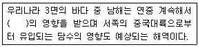
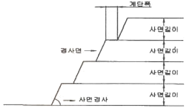
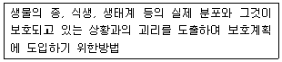
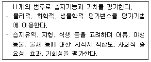
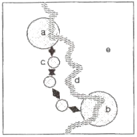
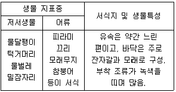
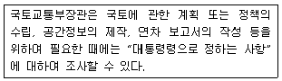
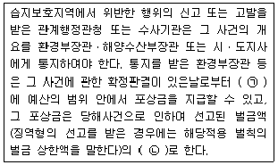
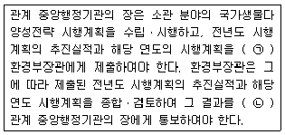
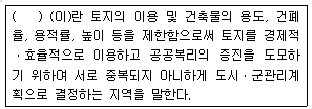

자연생태복원기사(구) (2018-03-04 기출문제)
1과목: 환경생태학개론
1. 툰드라(Tundra)의 설명으로 틀린 것은?
- 북쪽의 극지에 해당한다.
- 교란발생 시 회복에 오랜 기간이 걸린다.
- 봄과 여름이 오면 토양의 아래층은 그대로 영구 동토로 남아있으나 표층은 해동 된다.
- 건생식물이 우점한다.
(정답률: 65%)

2. 생물학적 영향을 미치는 금속류에 대한 설명 중 맞지 않는 것은?
- 경금속(light metals) - 나트륨, 칼륨, 칼슘 등 양이온으로 수중에 분포
- 전이금속(transition metals) - 나트륨, 칼륨, 칼슘 등 양이온으로 수중에 분포
- 전이금속(transition metals) - 철, 구리, 코발트, 망간 등 미량원소이나 고농도에서는 유독함
- 중금속(heavy metals or metalloids) - 수은, 납, 셀레늄, 비소 등 저농도에서도 유해함
(정답률: 71%)
3. 빨판상어와 상어의 관계와 같이 다른 한쪽은 전혀 영향을 받지 않는 경우를 가리키는 것은?
- 종간경쟁
- 편해공생
- 편리공생
- 상리공생
(정답률: 74%)
4. 대기오염물질의 중요한 제한 요인 중 육상 생태계의 교란을 일으키는 원인이 아닌 것은?
- 빛의 조사량과 광도
- 생물들의 내성 한계
- 온도상승에 따른 기후변화
- 기후변화에 따른 강우량의 변동
(정답률: 62%)
5. 수은(Hg)을 함유하는 폐수가 방류되어 오염된 바다에서 잡은 어패류를 섭취함으로서 발생하는 병은?
- 이따이이따이병
- 미나마타병
- 피부흑색병
- 골연화증
(정답률: 69%)
6. 생물이 생태계에서 차지하는 위치와 신분으로서 생태계 기능상의 위치를 의미하는 것은?
- niche
- biotop
- habitat
- ecosystem
(정답률: 59%)
7. 다음 중 추이대에 적합하지 않은 항목은?
- 구조가 다른 두 군집 사이의 전이지대이다.
- 어떠한 특성 공간을 점유하는 같은 종의 생물집단이다.
- 산림과 초원의 군집. 연질과 경질의 해저 군집 등의 이행부에서 볼 수 있다.
- 접합지대 또는 긴장지대로서 상당한 넓 이를 가지는 경우가 있다.
(정답률: 71%)
8. 환경 중 암석에 저장소를 가지며 생명의 DNA와 RNA에 주요 구성물질을 이루고 있는 것은?
- 인
- 황
- 철
- 질소
(정답률: 78%)
9. [보기]의 ( )에 들어갈 적합한 용어는?

- 연안류
- 대마난류
- 동한난류
- 북한한류
(정답률: 57%)
10. 두 개체군 상호간에 불이익을 초래하는 관계는?
- 기생
- 포식
- 편리공생
- 경쟁
(정답률: 84%)
11. 호소 내 수생식물의 구성종으로 적합하지 않는 것은?
- 침수식물: 검정말, 붕어마름
- 정수식물: 부들, 골풀
- 소택관목식물 : 버드나무, 굴참나무
- 부유식물 : 개구리밥, 생이가래
(정답률: 71%)
12. 실내 오염물 중 유해한 물질 중의 하나이며, 자연적으로 존재하는 방사성 가스로서 가공 석재물이 많은 지하철에서 많이 검출되는 것은?
- 황화수소
- 네온
- 아르곤
- 라돈
(정답률: 77%)
13. 갈매기가 비행할 때 기류의 에너지를 이용하는 경우처럼 생물이 외부환경에너지를 이용하는 것은?
- 에너지생산
- 에너지보조
- 에너지흐름
- 에너지배출
(정답률: 65%)
14. 가이아 가설(Gaia hypothesis)에 관한 설명 중 틀린 것은?
- 생물권은 화학적, 물리적 환경을 능동적으로 조절한다.
- 화산 폭발, 혜성의 충돌 또한 범지구적 항상성 범주에 든다.
- 원시대기에서 이차대기(현재 대기)로의 변화는 생물적 산물이다.
- 생물권은 자동조절적(cybernetic) 또는 제어적인 계이다.
(정답률: 54%)
15. 어떤 특정 시간에 특정 공간을 차지하는 같은 종류의 생물집단은?
- 생태군
- 개체군
- 우점군
- 분류군
(정답률: 63%)
16. 개체군의 상호관계에 있어 상리공생이 아닌 것은?
- 게 - 강장동물
- 흰 개미 - 편모충
- 식물뿌리 - 균근
- 질소고정박테리아 - 콩과 식물
(정답률: 57%)
17. 연안지역을 육지화 시키는 간척(reclamation)에 의해 나타나는 현상이 아닌 것은?
- 지역 활성화
- 농경지 또는 산업용지 확보
- 도로와 연안 교통망 개설 등 교통개선
- 간척지 개발에 의한 해양오염 감소
(정답률: 83%)
18. 열역학 제 2 법칙에 대한 설명으로 틀린 것은?
- 엔트로피의 법칙이라고도 한다.
- 물질과 에너지는 하나의 방향으로만 변화한다.
- 질서 있는 것에서 무질서한 것으로 변화한다.
- 엔트로피가 증대한다는 것은 사용가능한 에너지가 증가한다는 것을 뜻한다.
(정답률: 64%)
19. 리우환경선언과 관련하여 채택된 것이 아닌 것은?
- 기후변화협약
- 세계자연헌장
- 생물다양성협약
- 의제21(Agenda)
(정답률: 44%)
20. 생태계의 생물군집은 주위의 무기적인 환경과 끊임없이 물질의 순환이 일어나고 있다. 대표적인 물질순환이 아닌 것은?
- 물순환
- 공기순환
- 탄소순환
- 질소순환
(정답률: 64%)
2과목: 환경계획학
21. 환경의 특성을 바르게 설명한 것은?
- 상호관련성: 환경문제는 상호 작용하는 여러 변수들에 의해 발생하므로 상호간에 인과관계가 성립되기 때문에 단편적이고 부분적인 방법으로 해결해야 한다.
- 시차성: 일본의 공해병으로 잘 알려진 이타이이타이병과 미나마타병은 짧은 기간동안 배출된 오염물질의 영향이 뒤늦게 표출된 것이다.
- 광역성: 고비사막에서 발원한 황사는 황하를 타고 중국 동남 연해까지 내려와 황해를 건너 한반도에 영향을 미친 뒤, 태평양 넘어 미국까지도 이동하게 된다.
- 탄력성과 비가역성: 자연자원은 풍부할수록 회복탄력성이 낮고, 파괴될수록 복원력(자정능력)도 떨어지게 된다.
(정답률: 62%)
22. 국토의 난개발을 방지하고 개발과 보전의 조화를 유도하기 위하여 토지의 토양, 입지, 활용가능성 등에 따라 토지의 보전 및 이용가능성에 대한 등급을 분류하여 토지용도 구분의 기초를 제공하는 제도는?
- 토지적성평가
- 토지환경성평가
- 토지이용계획
- 용도지역지구제
(정답률: 56%)
23. 자연형 하천조성을 위한 공간계획을 하려고 할 때 틀린 것은?
- 식생이 훼손되지 않는 범위 내에서 기존의 동성을 최대한 활용한다.
- 이용정도에 따라 보존구역, 친수구역, 전이구역으로 공간을 구획한다.
- 시설물은 대상구역 내 다양성과 변화감이 조율될 수 있도록 선정한다.
- 하천식생은 묘목을 제외한 모든 수목은 사전에 뿌리돌림을 실시하도록 한다.
(정답률: 33%)
24. 생태 네트워크계획에서 고려할 사항으로 우선순위가 가장 낮은 것은?
- 재해방지 및 미기상조절을 위한 녹지의 확보
- 생물의 생식, 생육공간이 되는 녹지의 생태적 기능 향상
- 인간성 회복의 장이 되는 녹지 확보
- 환경학습의 장으로서 녹지 활용
(정답률: 32%)
25. 환경계획이나 설계의 패러다임 중 자연과 인간의 조화, 유기적이고 체계적 접근, 상호 의존성, 직관적 통찰력 등을 특징으로 하는 패러다임은?
- 데카르트적 패러다임
- 전체론적 패러다임
- 직관적 패러다임
- 뉴어버니즘적 패러다임
(정답률: 52%)
26. OECD의 환경지표 설정을 위한 PSR구조에서 대응(response)에 해당하는 것은?
- 에너지, 운송, 제조업, 농업
- 행정, 기업, 국제사회
- 대기, 토양, 자연자원
- 학교, 민간단체, 군대
(정답률: 63%)
27. 도로, 댐, 수중보, 하구언 등으로 인하여 야생생물의 서식지가 단편화되거나 훼손 또는 파괴되는 것을 방지하고 야생생물의 이동을 돕기 위하여 설치하는 인공구조물, 식생 등의 생태적 공간을 가리키는 것은?
- 대체자연
- 생태통로
- 자연유보지역
- 완충지역
(정답률: 81%)
28. 생태도시를 조성하기 위해서는 도시의 비오톱이 중요한 요소가 된다. 도시의 비오톱을 활용해 생태적인 도시계획을 실행하기 위한 지침으로 옳지 않은 것은?
- 동일한 토지이용이 오랫동안 지속되어진 공간은 우선적으로 보호한다.
- 서식지의 다양성을 유지한다.
- 자연보호에 있어서 도시전체의 동질성을 확보한다.
- 토지이용에 대한 밀도를 다양하게 한다.
(정답률: 59%)
29. 계획은 사회의 보편적 가치를 토대로 한 집합적 의사결정 시스템으로 존재하는 동시에 현실의 문제를 해결하는 기술적 해결책의 역할을 하기도 한다. 이에 기초해 논의되는 토지이용계획의 역할로 틀린 것은?
- 난개발의 방지
- 사회의 지속가능성을 위한 토지의 보전기능
- 세부 공간환경설계에 대한 지침 제시
- 토지이용현황의 적합성 판단과 규제 수단 제시
(정답률: 31%)
30. 도시생태계를 설명한 것으로 적합하지않은 것은?
- 도시생태계는 주로 자연시스템으로부터 인위적 시스템으로의 에너지 이전에 의해서 기능이 유지된다.
- 도시생태계는 사회-경제-자연의 결합으로 성립되는 복합생태계이다.
- 대도시들은 물질순환관계의 불균형으로 많은 문제점을 안고 있다.
- 대도시에서는 자연시스템을 구성하고 있는 대기, 토양, 공기, 물, 녹지 등이 오염되어 자정능력을 상실하고 있다.
(정답률: 52%)
31. 훼손된 자연을 회복시키고자 하는 세가지 단계에 해당되지 않는 것은?
- 복원(restoration)
- 복구(rehabilitation)
- 대치(replacement)
- 개발(development)
(정답률: 78%)
32. 환경수용능력의 산정기준이 아닌 것은?
- 환경자본
- 환경 이슈와 지표
- 환경용량 기준
- 환경적 개발방식
(정답률: 57%)
33. GIS로 파악이 가능한 자연환경정보의 내용이 아닌 것은?
- 대상지 규모
- 오염물질 종류
- 산림 및 산지
- 토지 피복/이용
(정답률: 80%)
34. 환경문제의 원인으로 가장 거리가 먼것은?
- 도시화
- 산업화
- 인구증가
- 주민참여 증대
(정답률: 76%)
35. 환경부에서 제작한 생태ㆍ자연도의 특징에 해당되지 않은 것은?
- 자연환경보전법에 의한 전국 자연환경조사 결과에 기초하여 매 10년마다 작성한다.
- 도면의 축척은 1/50000 이다.
- 생태ㆍ자연도 등급 변경신청을 받은 때에 변경신청에 정당한 사유가 있다고 인정되는 때에는 신청을 받은 날로부터 90일 이내에 정밀조사를 실시한다.
- 평가항목의 경게는 실선과 격자를 병행하여 표시한다.
(정답률: 62%)
36. 옴부즈만 기능에 대한 설명으로 틀린것은?
- 행정기관의 부작위, 불합리 제도에 의한 국민 권리를 구제한다.
- 행정기관의 부당한 처분은 업무의 효율을 위해 보안을 유지하는 등 비민주적으로 행정을 통제한다.
- 공개 운영 및 조사 등의 과정에서 행정 정보를 적극적으로 공개한다.
- 다른 기관에서 처리하여야 하는 민원 안내 및 고질적이고 반복적인 민원을 종결 할 수 있다.
(정답률: 75%)
37. 야생동물 이동통로 설계 시 중요하게 고려할 사항으로 가장 거리가 먼 것은?
- 야생동물 이동능력
- 주변의 기후ㆍ기상
- 이동통로에서 인간에 의한 간섭 여부
- 연결되어야 할 보호지역 사이의 거리
(정답률: 61%)
38. 리모트 센싱(Remote sensing)을 이용한 경관특성 분석의 장점을 기술한 것과 가장 거리가 먼 것은?
- 일정지역의 서로 다른 경관유형의 파악이 가능하다.
- 산림경관에서 수목의 활력도, 수관 및 잎의 변화 등을 파악하는데 용이하다.
- 분광특성을 통해 경관 구조를 정량적으로 파악하는 데 용이하다.
- 지하수위의 변화에 대한 정보를 구체적으로 제시해 줄 수 있다.
(정답률: 70%)
39. 생물지역계획의 실행 방향에 있어 분절된 토지를 연계해 에너지 흐름과 동ㆍ식물의 이동 흐름을 원활하게 하는 계획은?
- 건축계획적 기법
- 경관생태학적 방법
- 경관미학적 계획
- 도시설계적 기법
(정답률: 79%)
40. 도시 및 단지 차원의 환경계획이 아닌것은?
- 생태 네트워크 계획
- 생태마을과 퍼머컬처
- 생태건축
- 지속가능도시
(정답률: 42%)
3과목: 생태복원공학
41. 서식처의 창출과 같이 새롭게 서식처를 조성해주는 방법으로 틀린 것은?
- 자연적 형성
- 서식처 구조형성
- 설계자로서의 서식처
- 경제적 서식처
(정답률: 58%)
42. 하천의 보전 및 복원 방향에 대한 설명으로 틀린 것은?
- 호안을 고정시키는 개수공사가 되어 치수의 안정성을 확보해야한다.
- 하천의 구조와 기능을 고려한 종적 및 횡적구조가 복원되어야한다.
- 서식처를 연결하는 생태공학적인 복원이 되어야 한다.
- 자연친화적인 공법으로 하천이 복원되어야 한다.
(정답률: 69%)
43. 물질 및 에너지 순환계통으로 옳은 것은?
- 무기물→생산자→유기물→소비자→유기물→분해자
- 유기물→생산자→무기물→소비자→유기물→분해자
- 무기물→생산자→무기물→소비자→유기물→분해자
- 유기물→생산자→유기물→소비자→무기물→분해자
(정답률: 75%)
44. 생태복원 목표종 선정 시 영양단계의 최상위에 속하는 대형 포유류 및 맹금류와 같이 넒은 서식면적을 필요로 하지만, 지키면 많은 종의 생존이 확보된다고 생각되는 종은?
- 희소종
- 중추종
- 우산종
- 깃대종
(정답률: 60%)
45. 일반적으로 인산이 토양 중에 과다하게 있을 경우 식물에 결핍되기 쉬운 성분은?
- 철
- 마그네슘
- 아연
- 칼륨
(정답률: 46%)
46. 인간에 의해서 교란되지 않은 자연림과 초원의 토양 단면 중 유기물층에 대한 설명으로 가장 적당한 것은?
- 유기물층의 바로 아래에는 집적층이 있다.
- 유기물층은 유기물의 분해 정도에 따라 L층(낙엽층), F층(부휴층), H층(부식층)으로 구분된다.
- 유기물층은 점토, 철, 알루미늄 등의 물질이 집적되는 곳이다.
- 토양화 진전이 없고, 암석의 풍화가 적은 파쇄 물질의 층이다.
(정답률: 68%)
47. 채석지 등과 같은 사면복원 및 녹화를 위한 잔벽처리로 바람직하지 않은 것은?(오류 신고가 접수된 문제입니다. 반드시 정답과 해설을 확인하시기 바랍니다.)

- 사면 경사는 60°를 넘지 않도록 한다.
- 사면 길이는 10 m 이상으로 한다.
- 계단 폭은 2 m 이상으로 한다.
- 채석장은 채석이 종료된 직후에 복구녹화공사가 곧바로 착공되어야한다.
(정답률: 43%)
48. 조성되는 위치에 따른 대체습지의 구분에 대한 설명으로 틀린 것은?
- On-Site 방식은 개발사업의 범위 내에 대체습지를 조성하는 방법이다.
- On-Site 방식은 접근 지역에 습지를 조성 시 유출수나 지하수의 수질저하를 가져오지 않는다는 장점이 있다.
- Off-Site 방식은 유역관리에 있어서 구체적인 계획과 조성이 이루어질 수 있다는 장점이다.
- Off-Site 방식은 개발사업의 범위에서 벗어나지만 통상적으로 유역범위 밖에 조성하도록 하고 있다.
(정답률: 49%)
49. 생태네트워크 계획의 과정에서 보전, 복원, 창출해야 할 서식지 및 분단장소를 설정하는 과정은?
- 조사
- 분석ㆍ평가
- 실행
- 계획
(정답률: 53%)
50. 다음 설명에 해당하는 분석 방법은?

- GAP 분석
- 시나리오 분석
- 서식처 적합성 분석
- 영역성 분석
(정답률: 60%)
51. 행동권(home range) 분석을 위한 GPS 시스템의 특징으로 옳지 않은 것은?
- 데이터의 신뢰성이 높다
- 장비의 가격이 중ㆍ고가 이다.
- 24시간 추적이 불가능하다.
- 배터리의 크기 및 성능에 따라 장기간 사용할 수 있다.
(정답률: 75%)
52. 생태복원용 돌 재료에 대한 설명으로 맞는 것은?
- 조약돌은 가공하지 않은 자연석으로서 지름 10~20 cm 정도의 계란형 돌이다.
- 호박돌은 하천에서 채집되어 지름 50~70cm 로 가공한 호박형 돌이다.
- 야면석은 표면을 가공한 천연석으로서 운반이 가능한 비교적 큰 석괴이다.
- 견치석은 전면, 접촉면, 후면들을 구형에 가깝게 규격화한 돌이다.
(정답률: 45%)
53. 생태적 복원공법유형의 기본개념이 올바르게 짝지어진 것은?
- Naturalization - 인위적인 관리를 통한 자연적인 천이를 유도함
- Colonization - 산림의 종자원(seed source)이 가능한 곳에서 가지치기, 솎아주기, 기타 교란 등을 중지하는 방법
- Natural Regeneration - 나지 형태로 조성한 후 향후 식물이 자연스럽게 이입 하여 극상림으로 발달해 갈 수 있도록 유도함
- Nucleation - 수종을 패치 형태로 식재하는 방법으로, 핵심종이 자리 잡고, natural Regeneration이 가속화되게 하는 방법
(정답률: 50%)
54. 다음의 골재에 관한 설명 중 옳은 것은?
- 천연 경량골재에는 팽창성 혈암, 팽창성 점토, 플라이애시 등을 주원료로 한다.
- 잔 골재의 절건비중은 2.7 미만이다.
- 골재의 표면 및 내부에 있는 물의 전체 질량과 절건 상태의 골재 질량에 대한 백분율을 골재의 표면수율이라 한다.
- 굵은 골재의 최대치수는 질량으로 90% 이상을 통과시키는 체 중에서 최소 치수의 체 눈을 체의 호칭치수로 나타낸 굵은 골재의 치수이다.
(정답률: 48%)
55. 환경포텐셜에 대한 설명으로 틀린 것은?
- 복원잠재력을 의미한다.
- 환경의 생태수용력을 의미한다.
- 시간이 지나면서 천이가 진행될 가능성을 의미하기도 한다.
- 특정 장소에서 종의 서식이나 생태계 성립의 잠재적 가능성을 나타내는 개념이다.
(정답률: 48%)
56. 소하천에서 어류의 자유로운 계류 통행을 위해서 피해야하는 것은?
- 잡초가 많다.
- 바닥에 크고 작은 돌이 있다.
- 계류에 낙차를 크게 둔다.
- 나무로 그늘지게 한다.
(정답률: 71%)
57. 생태공학적 측면에서 녹색방음벽에 대한 설명으로 틀린 것은?
- 버드나무 등을 활용하여 방음벽을 녹화 한다.
- 태양전지판 등을 설치하여 자연에너지를 설치할 수 있는 발전시설을 겸하는 방음벽을 말한다.
- 식물이 서식 가능한 화분으로 녹화한 방음벽이다.
- 녹색투시형 담장이나 기존방음벽에 녹색으로 도색한 방음벽을 말한다.
(정답률: 70%)
58. 농장에서 식물 종자를 파종하여 뗏장으로 키운 후 현지로 운반하여 포설만 하면 시공이 완료되는 공법은?
- 식생매트공법
- 식생자루공법
- 식생구멍심기공법
- 식생기반재 뿜어붙이기공법
(정답률: 71%)
59. 식재기반에 요구되는 조건이 아닌 것은?
- 식물의 뿌리가 충분히 뻗을 수 있는 넓이가 있어야한다.
- 식물의 뿌리가 충분히 생장할 수 있는 토층이 있어야한다.
- 물이 하부로 빨리 빠져나가지 않도록 하층과의 경계에 불투수층이 있어야 한다.
- 어느 정도의 양분을 포함하고 있어야한다.
(정답률: 76%)
60. 면적 300 m2인 하천 호안에 규격이 30 x 30 cm 인 갈대뗏장(sod)을 입히는데 필요한 매수는?
- 약 333매
- 약 3030매
- 약 3334매
- 약 3950매
(정답률: 53%)
4과목: 경관생태학
61. 사전환경성검토 시 입지의 적절성을 판단하기 위한 현황 파악 지표가 아닌 것은?
- 주요 생물 서식공간의 분포 현황
- 환경 관련 보전지역의 지정 현황
- 개발 사업의 유형
- 개발 대상지역의 지가
(정답률: 71%)
62. 지구관측위성 Landsat TM의 근적외선 영역 (파장: 0.76 ~ 0.9 μm)을 이용한 응용분야는?
- 식생유형, 활력도, 생체량 측정, 수역, 토양 수분 판별
- 물의 투과에 의한 연안역 조사, 토양과 식생의 판별, 산림유형 및 인공물 식별
- 광물과 암석의 분리
- 식생의 스트레스(stress) 분석, 열추정
(정답률: 41%)
63. 습지의 기능을 평가하는 방법 중 아래의 설명에 해당하는 것은?

- RAM (rapid assessment method)
- WET II(wetland evaluation technique II)
- HGM (the hydrogeomorphic)
- EMAP (environmental monitoring assessment program)
(정답률: 52%)
64. 콘크리트나 아스팔트로 포장된 도로로 인하여 주변생태계에 미치는 영향으로 가장 거리가 먼 것은?
- 도로 횡단 동물의 압사
- 교량으로 인한 어도 차단
- 소음에 의한 교란
- 도로 자체와 가장자리의 미기후 변화
(정답률: 54%)
65. 도시생태계 평가에 사용될 수 있는 방안 중 가장 거리가 먼 것은?
- 환경영향평가제도
- 사전환경성검토
- 산지특성평가
- 비오톱 평가
(정답률: 73%)
66. GIS에서 커버리지 또는 레이어(coverage or layer)에 대한 설명으로 옳지 않은 것은?
- 단일주제와 관련된 데이터 세트를 의미한다.
- 공간자료와 속성자료를 갖고 있는 수치지도를 의미한다.
- 균등한 특성을 갖는 래스터정보의 기본 요소를 의미한다.
- 하나의 인공위성 영상에 포함되는 지상의 면적을 의미하기도 한다.
(정답률: 41%)
67. 패치와 패치가 만나 형성되는 경계에 관한 설명으로 틀린 것은?
- 자연경관에서 패치와 패치가 만나는 경계부는 곡선이며 복잡하고 부드럽다.
- 인위적으로 만들어진 경계부는 직선적이다.
- 곡선적 경계는 경계를 따라 이동하는 종에게 유리하고, 직선적 경계는 경계를 가로질러 이동하는 종에게 유리하다.
- 작은 패치를 가진 곡선적 경계가 토양침식을 막고 야생동물이 이동할 때 유리하다.
(정답률: 44%)
68. 생태통로의 기능 중 순기능에 해당하는 것은?
- 장벽기능
- 복원기능
- 흐름 또는 이동기능
- 침몰기능
(정답률: 69%)
69. 경관생태학에서의 공간요소를 나타내는 그림이다. 그림에 대한 설명으로 부적합한 것은?

- a, b는 생물서식공간이며 종 공급지로서 중요한 역할을 한다.
- c는 보조 패치로서 종 이동의 단절을 막을 수 있다.
- d는 하천으로 생물서식처로만 기능을 한다.
- e는 패치와는 이질적인 요소이며, 전체 토지면적의 반 이상을 덮고 있다.
(정답률: 72%)
70. 경관생태학이라는 용어를 최초로 사용한 사람은?
- Troll
- Forman
- Zonneveld
- Harber
(정답률: 77%)
71. 경관 구성요소를 가장 바르게 나열한 것은?
- 패치 - 산림 - 농경지
- 패치 - 코리더 - 메트릭스
- 코리더 - 메트릭스 - 수목
- 패치 - 코리더 - 건축물
(정답률: 76%)
72. 지난 반세기 동안 네덜란드 북해 연안과 더불어 우리나라의 서해안에서 가장 활발하게 일어났던 훼손으로 인위적으로 해안경관을 변화시켜 친환경적이지 못하며 자연적인 해안 경관을 해치게 된 것은?
- 쓰레기 투기
- 해상 유류 유출 사고
- 간척 및 매립
- 연안의 수많은 양식시설
(정답률: 70%)
73. 생태 천이로 인해 산림생태계는 산림군집의 기능적, 구조적 변화를 가져오게 된다. 이에 대한 설명으로 알맞지 않은 것은?
- 천이 후기단계로 갈수록 종다양성이 높고 생태적 안정성이 높아진다.
- 생태계의 기본전략은 K 전략에서 r 전략으로 변화한다.
- 생태천이 초기에는 광합성량과 생체량의 비(P/B)가 높다.
- 생태천이 후기에는 호흡량이 높아져 순군집 생산량은 초기단계보다 오히려 낮아진다.
(정답률: 55%)
74. 비오톱(Biotop)의 개념을 가장 바르게 설명한 것은?
- 지생태적 요소 중심의 동질성을 나타내는 공간단위
- 인문적 요소들의 상호작용을 통해 나타나는 동질적 공간단위
- 생물생태, 지생태, 인문적 요소들의 상호복합 작용을 통해 동질성을 나타내는 공간단위
- 어떤 일정한 야생 동ㆍ식물의 서식공간이나 중요한 일시적 서식 공간단위
(정답률: 46%)
75. 다음 중 생태복원과 관련이 없는 것은?
- 생물이동통로를 설치하여 동물의 이동을 돕는다.
- 화전민 거주지였던 곳에 주변의 임상과 유사하게 군락식재를 적용한다.
- 비버(beaver 혹은 Castor species)가 하천에 만든 댐을 허물어 물의 흐름을 원활하게 한다.
- 하천의 호안블럭을 걷어내고 소와 여울을 만든다.
(정답률: 69%)
76. 습지를 현명하게 이용할 수 있는 방법은?
- 습지 기능과 가치를 보전하기 위해 개발사업에 의한 훼손을 최소화
- 농지로 전환하여 농작물의 수확량 증가
- 매립하여 경제적인 효과를 극대화
- 놀이기구 등을 도입하여 수변 레크레이션 공간을 창출
(정답률: 70%)
77. 비오톱 유형분류에 필요한 기초 자료의 종류를 가장 바르게 나열한 것은?
- 토지이용형태도면, 수질도면, 토양도면
- 식생도면, 항공사진, 교통지도
- 지형도면, 항공사진, 식생도면
- 항공사진, 지적도, 인구분포도면
(정답률: 68%)
78. 경관 패턴 분석을 위한 자료에서 잠재적인 오차의 원천이 아닌 것은?
- 자료의 연령
- 위치의 정확도
- 자료의 분량
- 내용의 정확도
(정답률: 63%)
79. 울릉도가 독도보다 더 많은 생물을 갖고 있다면 이를 설명하는 이론에 가장 가까운 것은?
- 메타개체군 이론
- 동태적 보전이론
- 도서생물지리학이론
- 경쟁적 배제의 원리이론
(정답률: 64%)
80. 보전 공간 설정을 위한 비오톱 평가지표들을 가장 바르게 나열한 것은?
- 접근성, 포장율, 층위구조
- 복원능력, 종다양도, 멸종위기종의 출현
- 주거지와의 거리, 멸종위기종의 출현
- 층위구조, 종다양도, 이용빈도
(정답률: 67%)
5과목: 자연환경관계법규
81. 국토의 계획 및 이용에 관한 법률상 개발행위허가 신청 시 첨부하여야 할 계획서의 내용과 거리가 먼 것은?
- 경관, 조경에 관한 계획
- 개발 이익 환원에 관한 계획
- 위해방지, 환경오염 방지계획
- 기반시설의 설치나 그에 필요한 용지의 확보 계획
(정답률: 66%)
82. 다음은 환경정책기본법령상 수질 및 수생태계 상태별 생물학적 특성 이해표이다. 이에 가장 적합한 생물등급은?

- 매우 좋음 ~ 좋음
- 좋음 ~ 보통
- 보통 ~ 약간 나쁨
- 약간 나쁨 ~ 매우 나쁨
(정답률: 61%)
83. 국토의 계획 및 이용에 관한 법률상 토지의 이용실태 및 특성, 장래의 토지 이용방향 등을 고려한 용도지역 구분에 관한 설명으로 옳지 않은 것은?
- 관리지역 : 도시지역의 인구와 산업을 수용하기 위하여 도시지역에 준하여 체계적으로 관리하거나 농림업의 진흥, 자연환경 또는 산림의 보전을 위하여 농림지역 또는 자연환경보전지역에 준하여 관리할 필요가 있는 지역
- 농림지역 : 도시지역에 속하지 아니하는 「농지법」에 따른 농업진흥지역 또는 「산지관리법」에 따른 보전산지 등으로서 농림업을 진흥시키고 산림을 보전하기 위하여 필요한 지역
- 산업단지개발지역 : 인구와 산업이 밀집되어 있거나 밀집이 예상되어 그 지역에 대하여 체계적인 개발ㆍ정비ㆍ관리ㆍ보전 등이 필요한 지역
- 자연환경보전지역 : 자연환경ㆍ수자원ㆍ해안ㆍ생태계ㆍ상수원 및 문화재의 보전과 수산자원의 보호ㆍ육성 등을 위하여 필요한 지역
(정답률: 47%)
84. 국토기본법상 “국토계획”에 포함되지 않는 계획은?
- 국토종합계획
- 도서종합계획
- 부문별계획
- 시ㆍ군종합계획
(정답률: 46%)
85. 야생동물 보호 및 관리에 관한 법률 시행규칙상 멸종위기 야생생물 I급(조류)이 아닌 것은?
- 참수리(Haliaeetus pelagicus )
- 호사비오리(Mergus squamatus )
- 검독수리(Aquila Chrysaetos )
- 검은목두루미(Grus grus )
(정답률: 33%)
86. 다음은 국토기본법령상 국토조사에 관한 사항이다. 밑줄 친 “대통령령으로 정하는 사항”에 해당하지 않는 것은?

- 지형 ㆍ 지물 등 지리정보에 관한 사항
- 농림 ㆍ 해양 ㆍ 수산에 관한 사항
- 국제협력 ㆍ 대내 홍보에 관한 사항
- 방재 및 안전에 관한 사항
(정답률: 51%)
87. 다음은 습지보전법령상 포상금 관련기준이다. ( )안에 가장 적합한 것은?

- ㉠ 3월 이내, ㉡ 100분의 30이내
- ㉠ 3월 이내, ㉡ 100분의 10이내
- ㉠ 2월 이내, ㉡ 100분의 30이내
- ㉠ 2월 이내, ㉡ 100분의 10이내
(정답률: 27%)
88. 자연공원법상 용어의 뜻 중 “자연공원” 에 속하지 않는 것은?
- 국립공원
- 도립공원
- 시립공원
- 지질공원
(정답률: 64%)
89. 환경정책기본법령상 도로변지역의 낮(06:00~22:00)시간의 소음환경기준으로 옳은 것은? (단, 적용대상지역은 공업지역 중 준공업지역, 단위는 Leq dB(A))
- 60
- 65
- 70
- 75
(정답률: 40%)
90. 야생생물 보호 및 관리에 관한 법률상 수렵면허의 취소 또는 정지처분을 받은 자는 언제까지 수렵면허증을 시장ㆍ군수ㆍ구청장에게 반납하여야 하는가?
- 취소 또는 정지처분을 받은 당일 날
- 취소 또는 정지처분을 받은 날부터 1일 이내
- 취소 또는 정지처분을 받은 날부터 3일 이내
- 취소 또는 정지처분을 받은 날부터 7일 이내
(정답률: 51%)
91. 다음은 생물다양성 보전 및 이용에 관한 법률 시행령상 국가생물다양성전략 시행계획의 수립ㆍ시행에 관한 사항이다. ( )안에 알맞은 것은?

- ㉠ 매년 12월 31일까지, ㉡ 매년 1월 31일까지
- ㉠ 매년 12월 31일까지, ㉡ 매년 2월 28일까지
- ㉠ 매년 1월 31일까지, ㉡ 매년 2월 28일까지
- ㉠ 매년 1월 31일까지, ㉡ 매년 3월 31일까지
(정답률: 35%)
92. 자연환경보전법령상 생태계보전협력금의 부과지역계수가 틀린 것은?
- 생산관리지역 : 2.5
- 보전관리지역 : 3
- 녹지지역 : 2
- 자연환경보전지역 : 4
(정답률: 40%)
93. 다음은 국토의 계획 및 이용에 관한 법률상 용어의 뜻이다. ( )안에 가장 적합한 것은?

- 용도지역
- 용도지구
- 용도구역
- 개발밀도관리구역
(정답률: 63%)
94. 자연공원법상 자연공원의 형상을 해치거나 공원시설을 훼손한 자에 대한 벌칙기준은?
- 1년 이하의 징역 또는 1천만원 이하의 벌금
- 2년 이하의 징역 또는 2천만원 이하의 벌금
- 3년 이하의 징역 또는 3천만원 이하의 벌금
- 5년 이하의 징역 또는 5천만원 이하의 벌금
(정답률: 39%)
95. 야생동물 보호 및 관리에 관한 법률 시행규칙 상 수렵면허 취소 또는 정지 등과 관련한 행정처분의 개별기준 중 수렵 중에 고의 또는 과실로 다른 사람의 재산에 피해를 준 경우 위반 차수별 행정처분기준으로 옳은 것은?
- 1차: 면허정지 3개월, 2차: 면허정지 6개월, 3차: 면허취소
- 1차: 경고, 2차: 면허정지 1개월, 3차: 면허정지 3개월,
- 1차: 경고, 2차: 면허정지 3개월, 3차: 면허취소
- 1차: 면허정지 1개월, 2차: 면허정지 3개월, 3차: 면허정지 6개월
(정답률: 41%)
96. 습지보전법상 환경부장관과 해양수산부 장관은 습지조사의 결과를 토대로 몇 년마다 습지보전기초계획을 각각 수립하여야 하는가?
- 3년
- 5년
- 10년
- 20년
(정답률: 42%)
97. 환경정책기본법령상 각 위원회에 관한 설명으로 옳지 않은 것은?
- 중앙환경정책위원회의 위원은 환경부장관이 위촉하거나 임명한다.
- 중앙정책위원회의 회의는 위원장이 필요하다고 인정할 때에 위원장이 소집하되, 회의는 위원장과 위원장이 회의마다 지명하는 3명 이상의 위원으로 구성하며, 위원장이 그 의장이 된다.
- 증권역환경관리위원회는 위원장 1명을 포함한 30명 이내의 위원으로 구성하고, 중권역위원회의 위원장은 유역환경청장 또는 지방환경청장이 된다.
- 중앙정책위원회의 원활한 운영을 위하여 환경정책ㆍ자연환경ㆍ기후대기ㆍ물 등 환경 관리 부문별로 분과위원회를 두며, 분과 위원회는 분과위원장 1명을 포함한 25명 이내의 위원으로 구성한다.
(정답률: 35%)
98. 독도 등 도서지역의 생태계 보전에 관한 특별법상 환경부장관이 특정도서의 자연생태계 보전을 위하여 토지 등을 매수하는 경우 토지매수가격은 어느 법에 의해 산정하는가?
- 공유토지 분할에 관한 특례법
- 공익사업을 위한 토지 등의 취득 및 보상에 관한 법률
- 국토의 계획 및 이용에 관한 법률
- 지가공시 및 토지 등의 평가에 관한 법률
(정답률: 47%)
99. 백두대간 보호에 관한 법률상 산림청장은 백두대간의 효율적 보호를 위해 마련된 원칙과 기준에 따라 기본계획을 몇 년마다 수립하여야 하는가?
- 3년
- 5년
- 10년
- 20년
(정답률: 59%)
100. 자연환경보전법규상 위임 업무 보고사항 중 “생태마을의 지정 및 해제 실적”보고 횟수의 기준으로 각각 옳은 것은?
- 지정: 연 4회, 해제: 연 2회
- 지정: 연 4회, 해제: 수시
- 지정: 연 1회, 해제: 연 2회
- 지정: 연 1회, 해제: 수시
(정답률: 58%)